Enid Blyton was born in London in 1897. She loved books, gardens and — most of all — animals. She had many dogs during her life, and her love for dogs is why Timmy is such an important character.
She wrote more than 700 books for children. Her most famous series is The Famous Five — 21 books about the same four cousins and their dog. She also wrote The Secret Seven, Malory Towers and the little bear Noddy.
Her books have sold more than 600 million copies. The book you are about to read — Five on a Treasure Island — is the very first Famous Five book, written in 1942. This lesson follows the Vereshchagina Reader 7 adaptation in 12 chapters.
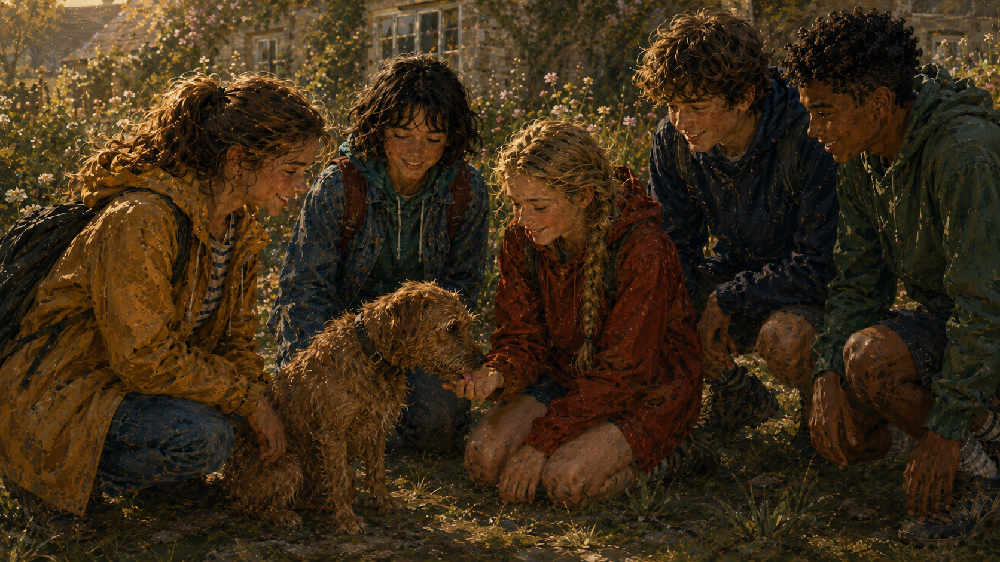
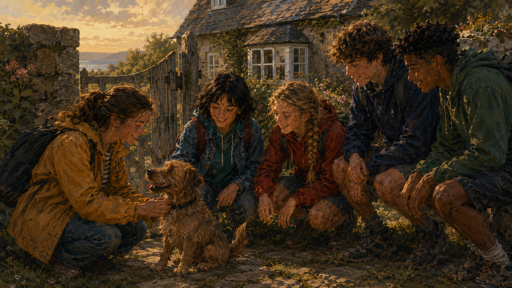
Julian, Dick and Anne arrived at Kirrin Cottage on a warm summer afternoon. Their Aunt Fanny came running out of the old wooden door. "Welcome to Kirrin!" she cried. She hugged them one by one and gave each a big kiss.
"Where's George?" asked Julian, looking round.
"Oh — that girl!" said Aunt Fanny with a sigh. "I asked her to wait, and she has gone off somewhere. You will meet her at supper, I hope."
Aunt Fanny took them into the house. It was a very old house, and the garden was full of flowers. Uncle Quentin came out of his study to say hello. He was tall and serious. He worked with big books full of numbers and did not like noise.
At tea, Georgina came in. She was a small girl with short brown hair and brown skin from the sun. She looked more like a boy than a girl. A huge brown-and-black dog stood by her side.
"This is my cousin Georgina," said Aunt Fanny.
The girl's face went hard. "I am not Georgina. I am George. If you call me Georgina, I will not answer."
Julian smiled. "All right, George. Are you glad we came?"
George looked at him with serious eyes. "Maybe. It depends. This is Timmy."
The big dog wagged his tail. Anne laughed and put out her hand. Timmy licked it at once, and Anne fell in love with him.
After tea, George took them into the garden. From the top of a small rocky cliff, they saw a wide blue bay. In the middle of the bay, like a green ship on the water, stood a small rocky island. On the island were the grey ruins of a castle.
"That is Kirrin Island," said George. Her eyes shone with pride. "It belongs to me. My mother gave it to me. Nobody goes there without my permission — nobody at all."
— End of Chapter 1 —
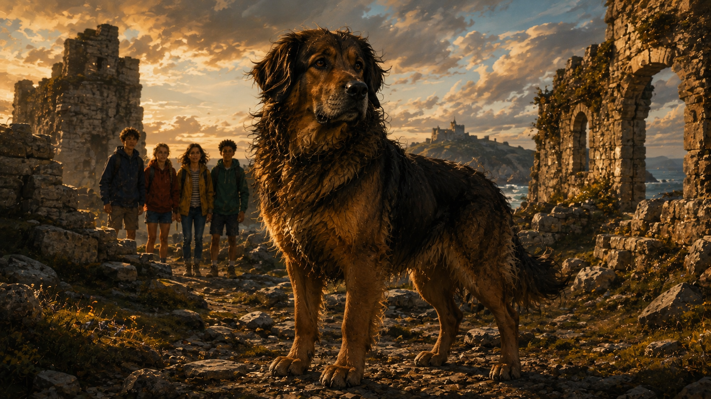
That evening, George sat with her cousins on the beach. Timmy lay warm at her feet. "I will tell you a queer story," she said. "It is about my great-great-grandfather. He was a Kirrin, like me. He had a big ship full of gold — real gold bars."
"Gold!" cried Dick. "Where did it go?"
"One dark night," said George, "there was a terrible storm. His ship hit the rocks near Kirrin Island and went down. The gold went with it. Everyone said the sea took it forever."
Anne's eyes were wide. "But is the story true?"
"Nobody knows for certain," said George. "The wreck is still there, under the water near the island. On very calm days, you can see the dark shape of it from the rocks."
Julian looked at George. "Do you believe the gold is still there?"
George was quiet for a moment. Then she said, "I do. And one day I will find it."
Timmy stood up and put his big head on George's knee. Anne stroked his warm fur.
"George," she said softly, "why do you love Timmy so much?"
George's face changed. It became warm and soft. "Because he is my friend," she said. "Mother does not let me have him in the house. Father says he is too noisy. So he lives in the village with Alf the fisher-boy. But he is really mine. He knows me. He would do anything for me."
"He is a lovely dog," said Julian. "We love him too."
George looked at her three cousins. For the first time, she smiled a proper big smile. "Then you can be his friends too," she said.
That was the moment when the Famous Five really began. The three cousins from London, the strange girl from Kirrin, and the big brown-and-black dog. Five friends together.
— End of Chapter 2 —
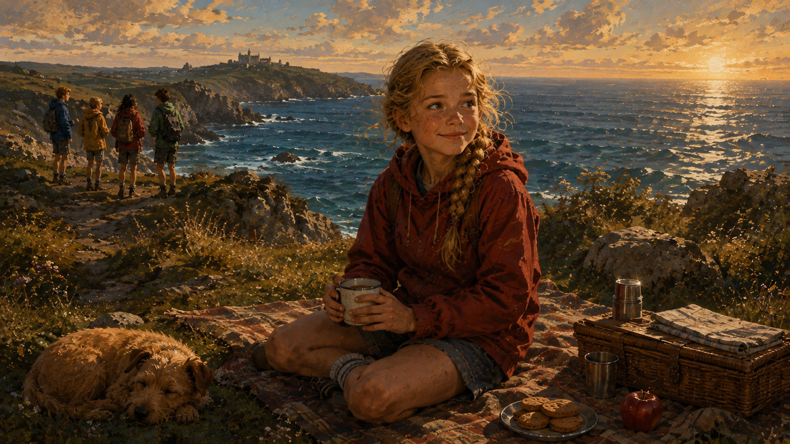
The next afternoon was bright and warm. The Five went down to the little beach below Kirrin Cottage. Timmy ran ahead, barking at every wave. The three cousins built a big sandcastle. George helped a little, but her eyes kept going to Kirrin Island out in the bay.
After a while, Julian said, "George — do you have any old family papers? Any old maps or notes about the ship?"
George's eyes lit up. "Maybe. There is a big wooden box in the attic. My mother said it belonged to my great-grandfather. Nobody has opened it for years."
They ran back to the cottage. In the dusty attic, they found the box. It was heavy. Julian carried it down. On the kitchen table they opened it.
Inside were old letters, brown with age, an old pipe, a broken watch, and — right at the bottom — a small leather notebook. Julian took it out very carefully.
"A ship's log," he whispered. He opened it. The pages were yellow. In old ink, someone had drawn small pictures — a ship, an island, a cross.
"Look!" cried Anne. "There is a map here!"
All four children leaned over the little book. On one page was a rough drawing of Kirrin Island. And on the island — clearly — was a small cross.
"What does the cross mean?" asked Dick, almost afraid to say it.
George's face was pale with excitement. "It must be the place where the gold was hidden — if any of the gold ever came back to land. Or perhaps something else — something from the wreck."
Julian folded the map carefully and put it into his pocket. "Tomorrow," he said, "we go to the island."
George nodded. Timmy wagged his tail. Nobody could sleep well that night.
— End of Chapter 3 —
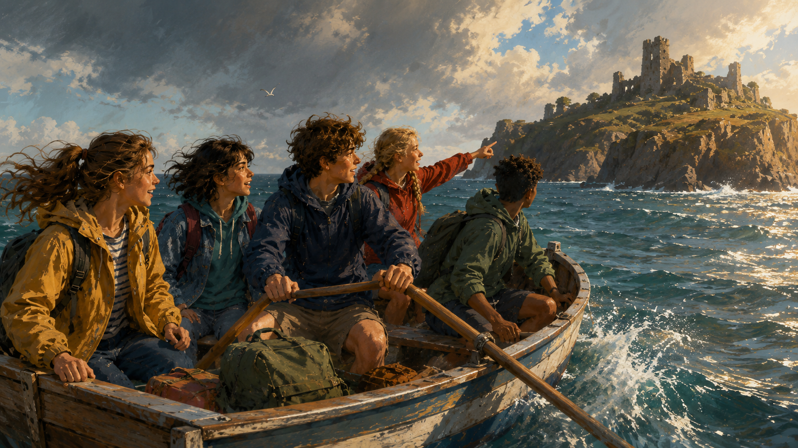
The next morning the sun rose bright and calm. Aunt Fanny packed them a big picnic — sandwiches, cold chicken, tomatoes, a jar of lemonade and a cake. "Be back before dark, children!"
George's little wooden boat waited on the sand. Julian and Dick took the oars. Anne sat in the middle with the basket. George held Timmy tight. They pushed off into the shining blue water.
The sea was so clear they could see silver fish below. Timmy tried to bite the water, and Anne laughed until she almost fell in. After twenty minutes, they came near the island. Rocks stood sharp up from the sea. George knew the safe way. She led them around a big grey rock, then into a small quiet cove. The boat slid onto soft sand.
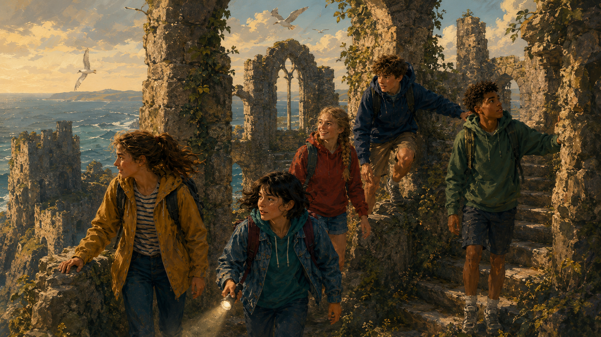
They climbed the little hill and saw the old castle. It was ruined and roofless. Grass grew inside the walls. Ivy hung from the towers. A few grey seabirds sat on the top of one tower and cried out at them.
"It is like a story," Julian whispered.
They walked through the ruins. In one broken room they found an old fireplace. In another, a broken stairway. Anne collected small stones for her collection at home.
Then George called them. She was standing on a high rock, looking down into the sea on the far side of the island. "Look!" she said. Her voice was low and excited.
They came and looked. Deep down under the water, they saw a long dark shape. It lay on the sea floor like a huge sleeping fish. Wood, half-broken. A shape that had once been a great ship.
"The wreck," George said. "That is my great-great-grandfather's ship. It has been there for over a hundred years."
They stood in silence. The wind pulled at their hair. The sea below them held the ship — and, maybe, the gold.
— End of Chapter 4 —
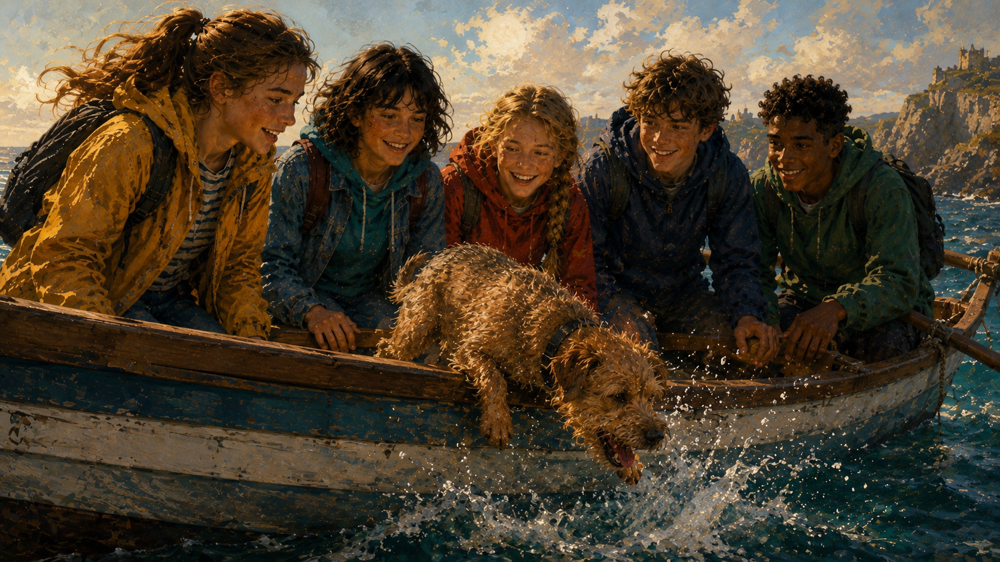
That night a great storm came to Kirrin Bay. The wind was so strong that the windows shook. Rain hit the roof like small stones. The sea beat against the cliffs. Anne could not sleep. She sat by the window and watched the black waves.
In the morning the storm was over. The sun came out, but the sea was still wild. The children ran down to the beach. And then George gave a great cry.
"LOOK! Look at the island!"
They stared. On the rocks near the island, sitting high above the water, was a huge old wooden shape. The storm had lifted the wreck up from the sea bottom and thrown it on to the rocks.
"The wreck is out of the water!" cried Julian. "We can go into it! We can walk through it!"
They could hardly wait. As soon as the sea was calm enough, they took the boat and rowed to the island. They climbed carefully up to the wreck. The old wood was wet, dark and cold. The name of the ship was still just visible on the side: KIRRIN.
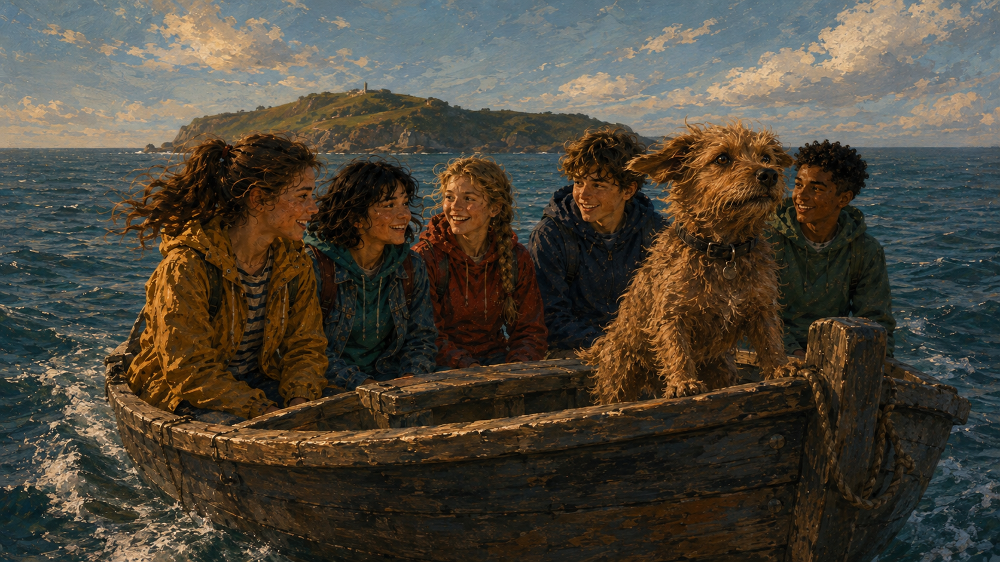
They stepped into the old cabin. Everything was covered in dark green sea-plants. A broken lantern hung from a hook. A rusty knife lay on the floor. In one corner, half hidden under wood, they saw a small wooden box, closed with old iron bands.
"A box!" whispered George. Her eyes were huge.
Together they pulled it out. It was heavy. They carried it back down to the boat with great care. Timmy walked in front, wagging his tail as if he understood everything.
"Home to Kirrin Cottage," said Julian. "We open the box tonight."
— End of Chapter 5 —
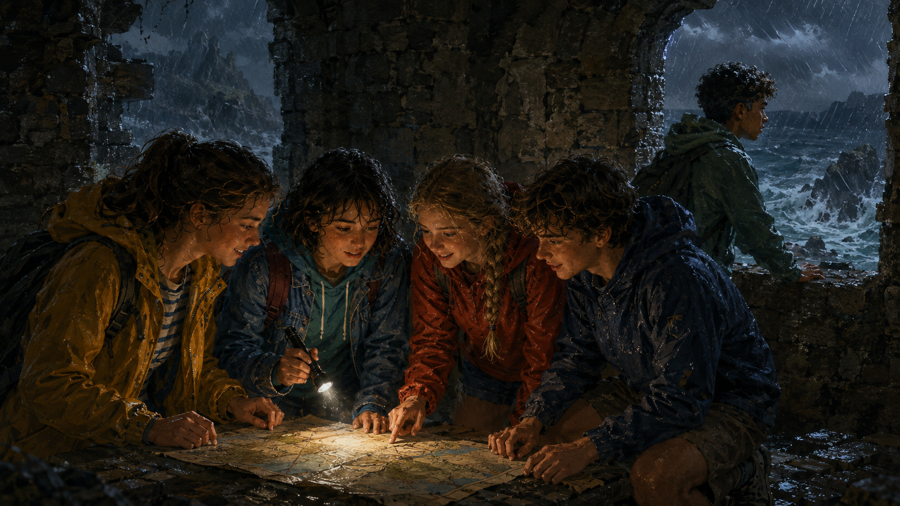
Back at Kirrin Cottage the box sat on the kitchen table. The children waited until it was dark, when Aunt Fanny and Uncle Quentin were in the sitting-room. Then they closed the kitchen door and lit two candles.
"Very quiet," Julian whispered. "We do not want Uncle to hear."
The lock of the box was black with rust. Julian tried his pocket knife. Nothing. Dick tried. Nothing. Then George brought her father's old chisel from the shed. Julian pushed the chisel under the iron band and pushed hard. With a small dry snap, the band broke. Julian pushed again. The lid opened.
Inside, wrapped in wet leather, was a folded paper.
Very carefully, Julian unwrapped it and laid it flat on the table. The four heads leaned in close. Timmy put his nose up too.
It was a map. A real map. On it was Kirrin Island — every rock, every wall of the castle, every stone stairway. And in one place, deep under the castle, was a small cross. Beside the cross, in old ink, someone had written:
"Here the gold of Kirrin was hidden. — Henry Kirrin, 1802."
Nobody spoke. Anne's hand was on Timmy's back. Dick's mouth was open. George was very white.
"So it is true," she whispered at last. "The gold never went down with the ship. My great-great-grandfather hid it under the castle. Under my castle."
Julian folded the map carefully. "We tell nobody yet," he said. "Only the five of us know. Agreed?"
"Agreed," they said, all together.
Timmy gave one soft bark, as if to say yes too. Outside, the wind moved in the garden trees. The candles gave a small warm light. And on the table, the old map waited.
— End of Chapter 6 —
The next morning a shiny black car came to Kirrin Cottage. Two men stepped out. One was tall and thin, with a long face. The other was short, with red hair. They rang the bell.
Aunt Fanny opened the door. "Good morning?"
"Good morning, madam," said the tall one. "We would like to speak to Mr. Quentin Kirrin, please. About the island."
George heard the word "island" and ran to the door. She stood behind her mother. Julian, Dick and Anne came from the garden. Timmy came too. He growled softly. George put a hand on his head.
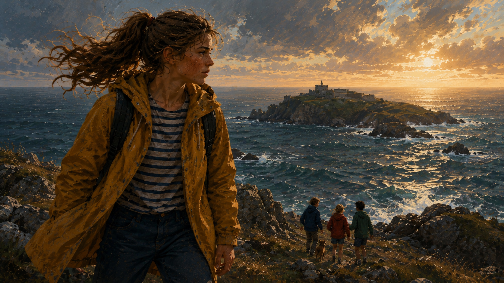
Uncle Quentin came out of his study. "Come in, gentlemen."
The men sat in the sitting-room. The tall one spoke. "Mr. Kirrin, we have a business offer. Kirrin Island is your family's, we understand. It is a small island. There is nothing on it — only old stones. We would like to buy it. We will pay a very good price. We will pay two thousand pounds."
Uncle Quentin's eyes opened wide. Two thousand pounds was a great deal of money. He looked at his wife.
But before he could speak, George spoke very loudly. "The island is NOT for sale. It is MY island. My mother gave it to me. I will not sell it. Never."
The tall man looked at George coldly. "Little girl, you are not the owner in law. Your father is."
Uncle Quentin's face went red. He did not like the tall man's tone. "My daughter is right," he said. "The island belongs to her. She does not wish to sell. That is the end of it. Good morning, gentlemen."
The men left. Their car drove away fast.
Julian looked at Dick. "Something is very wrong here," he said quietly. "Nobody offers two thousand pounds for old stones. They know about the gold. Somehow — they know."
George nodded. Her hands were fists. "Then we go to the island. Tomorrow. Before they do."
— End of Chapter 7 —
Before the sun rose, four children and a dog crept out of Kirrin Cottage. They took a rope, two torches, Uncle Quentin's old spade, a bottle of water, sandwiches from the kitchen and a very old folded map. The garden was cool. Nobody saw them.
At the beach, George's boat was ready. The sea was calm and grey in the early light. Julian and Dick took the oars. Anne sat with the picnic basket. George held Timmy tight and watched the horizon. She was afraid of one thing — that the two men had come already.
They rowed hard. The island came closer. When they reached the cove, they looked around. No other boat. They were the first.
"Quick," George whispered. "Up to the castle."
They pulled the boat high on the sand and ran up the little hill. In the ruined castle, they found a quiet corner and Julian opened the map on a flat stone. Everyone leaned in.
"Here we are," said Julian, pointing. "The castle. And here — deep under it — is the cross. The gold room."
"But how do we get under the castle?" asked Anne.
Julian looked at the map. "There must be a way down. A stone stairway, or an old well, or a hidden trap-door. We look for anything that leads down."
They began to search. Dick looked at every corner of the walls. Anne checked the old fireplaces. George walked along the outside. Timmy sniffed the ground.
Suddenly Timmy stopped. He put his nose to a big square stone in the floor of one broken room, and gave a small excited bark. George ran to him.
"Julian! Come here! Timmy has found something!"
— End of Chapter 8 —
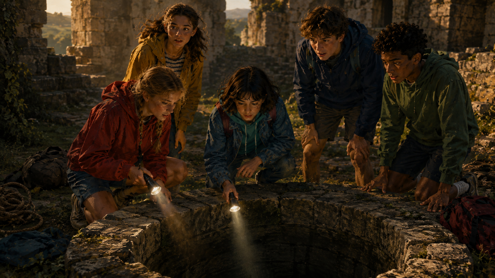
Julian, Dick and Anne came running. The big square stone was covered with grass and small yellow flowers. It looked like all the other stones. But Timmy would not move from it.
Julian bent down. He pushed the grass away. Along one edge of the stone he saw a small dark line — not much wider than a finger. He put his fingers in and pulled. Nothing.
"Dick, help me."
Together they pulled hard. The stone moved a little. Then a little more. Then, with a soft grating sound, it swung up on old iron hinges. Cold air came out of the dark hole below.
Anne stepped back. "Oh! It smells old!"
Below the stone, they saw a stone stairway going down into the dark. Timmy sniffed at it and did not seem afraid. He wagged his tail.
Julian looked at George. Her face was pale with excitement. "Do we go?"
"Of course we go," she whispered.
Julian tied the rope to a strong old tree stump growing at the corner of the ruined wall. He tested it. Then he lit his torch. "I go first."
He climbed carefully down the stairs. Dick came second. Then Anne, holding the rope. George came last, with Timmy right behind her.
The stairway curved. The walls were cold and wet. Their torches made small circles of light. After twenty steps, they reached the bottom. A low tunnel led away into the dark. Water dripped somewhere.
Julian looked at the map by torchlight. "This way. Not far now."
The tunnel was narrow. In some places they had to bend low. In one place they had to squeeze past a fallen stone. But the tunnel led somewhere. The gold was near.
— End of Chapter 9 —
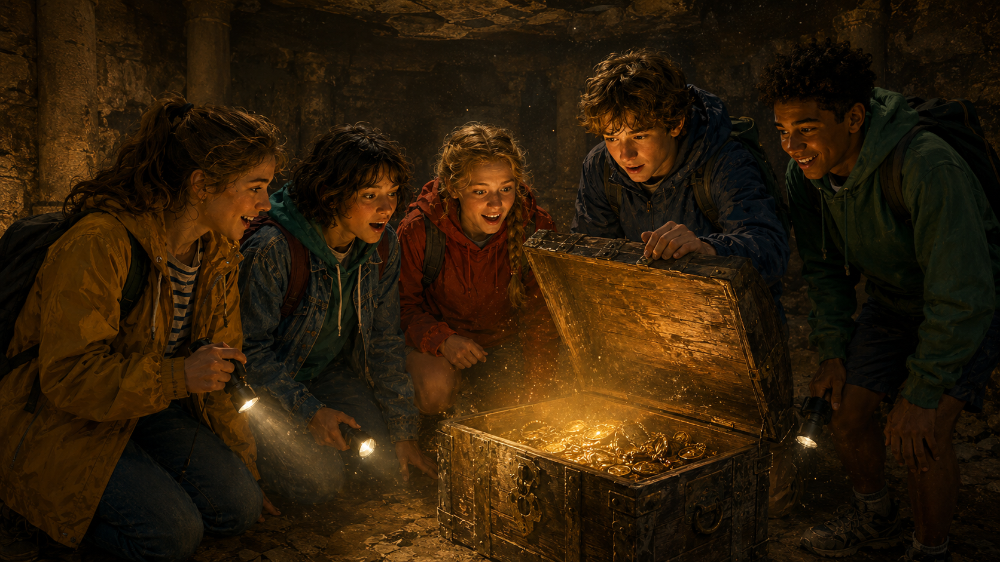
The tunnel opened into a small round room. It was much bigger than they had thought. Old spider webs hung from the ceiling. Their torches shone across the walls. Everyone stopped.
In the middle of the room stood a large wooden chest. It was black with age. Around it, on the floor, were smaller bags — many bags, all covered in thick dust.
Anne bent down. She touched one bag with her fingers. Inside, hard round things moved.
"Julian," she whispered. "I think — I think —"
Julian opened the bag very slowly. He poured some of the hard round things into his palm. In the torch light, they gave back a soft yellow shine.
"Gold," he said. Just the one word. His voice was small.
Dick opened another bag. More coins fell out. Some were bright gold. Some were older, darker. Some had strange writing. All were real.
George opened the big chest. It creaked open. Inside, wrapped in old red cloth, was a beautiful silver cup. And under the cup — more gold bars, thick as her arm, three of them.
"This is the treasure of Kirrin," George said very quietly. "This is my great-great-grandfather's gold. It has been under the castle for a hundred and fifty years, waiting for us."
The four cousins stood in silence around the chest. Anne's hand slipped into Dick's. Nobody knew what to say.
Then Timmy's ears went up. He turned. From the tunnel behind them came a very small sound — voices.
Voices coming down. Two voices.
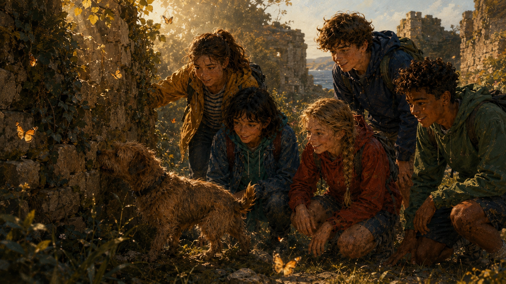
George's face went white. "The men," she whispered. "They followed us."
— End of Chapter 10 —
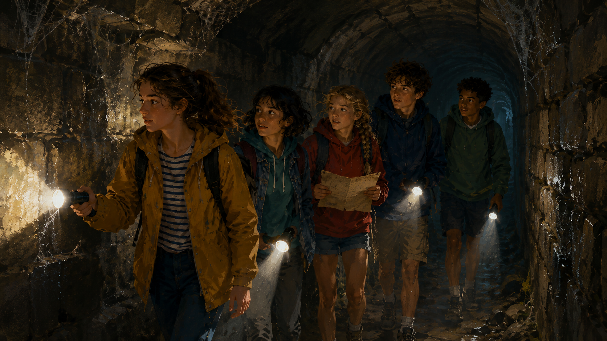
"Hide!" Julian whispered. "All of us!"
Behind the great chest was a shadow. They all crouched down. Timmy hid with George. His fur was warm. Nobody made a sound.
The voices came closer. Torch light flickered on the walls of the tunnel. Two men stepped into the room. The tall thin one and the short red-haired one. They gave a great shout.
"Look at this! Gold! Real gold!"
The tall one was greedy. He rushed to the chest. He picked up coins in both hands. His eyes shone. "We are rich," he said. "Rich!"
Then he saw Timmy's tail behind the chest.
His face changed. He turned to his friend. "There is someone here. Get the rope."
They pulled Julian, Dick, Anne and George out. George tried to keep Timmy quiet, but Timmy growled. The short one raised his hand. Timmy jumped forward, snarling.
"Quick!" cried George. She threw Timmy up the tunnel. "Go, Timmy! Go find help!"
The dog understood. He shot up the tunnel like a brown-and-black arrow. The tall man ran after him but was too slow.
The two men pushed the four children into the round room. "You stay here," said the tall one. "We take the gold up. Then we lock the trap-door above. Nobody will ever find you. Nobody knows you are here — except one dog, and one dog cannot open a locked door."
They carried the chest up the tunnel. They came back. They carried the bags. It took a long time. The children could hear their footsteps on the stone stairway above.
Then — a great heavy sound. The trap-door falling shut.
Then — silence.
Anne began to cry. Julian put an arm around her. George's hands were fists. Dick looked at the tunnel and said quietly, "Timmy will bring somebody. He always does."
— End of Chapter 11 —
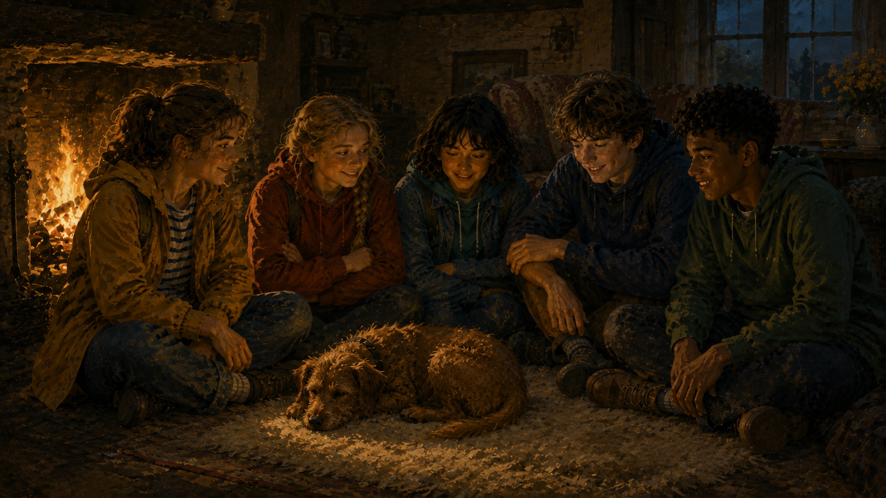
Meanwhile, Timmy ran. Up the tunnel. Up the stone stairway. He pushed hard at the trap-door — but the men had put a great stone on top. He could not open it. So Timmy did not stop. He went to the highest broken window of the castle and squeezed out.
Down the cove. Into the sea. Timmy could swim like a fish. He swam across the bay to the beach.
On the beach, Alf the fisher-boy was mending his nets. He looked up and saw a wet dog running to him. "Timmy!" he cried. "Where is George?"
Timmy pulled at Alf's coat. He barked. He ran a few steps and looked back. He barked again. Alf understood. Something was very wrong.
Alf ran to Kirrin Cottage. He told Aunt Fanny. Aunt Fanny cried and ran to Uncle Quentin. Uncle Quentin telephoned the police at once. Ten minutes later, a car with three officers was on the road to the sea.
Meanwhile, the two men in the boat rowed away from the island with the gold. They laughed. They did not see the police boat coming from the other side.
The police caught the two men at sea. Their boat was full of gold bags. There was no way to say it was theirs. The officers took them back to the town.
Then the officers rowed to the island with Alf and Uncle Quentin. Timmy led them to the trap-door. Uncle Quentin pushed off the great stone. The trap-door opened.
"Children!" he called down. "It is all right! Come up!"
One by one, four dusty happy children climbed out into the sun. Anne cried again — but this time from joy. George hugged Timmy so hard he almost fell over.
That evening, back at Kirrin Cottage, Aunt Fanny made hot chocolate and cake. Uncle Quentin held one gold coin in his hand for a long time. "This will change everything for our family," he said quietly. "We can pay all our bills. I can buy new books for my work. And, George — the island is truly yours. Nobody will ever try to take it again."
George nodded. Her eyes were bright. She looked at her three cousins. She looked at Timmy — who lay warm on the rug like a small brown-and-black lion. And she smiled her real, big smile.
The Famous Five had had their first adventure. And it was only the beginning.
— The End —
Enid Blyton · Five on a Treasure Island · 12 chapters · Vereshchagina Reader 7 adaptation.
Next: Five Go Adventuring Again — Book 2 in the series.